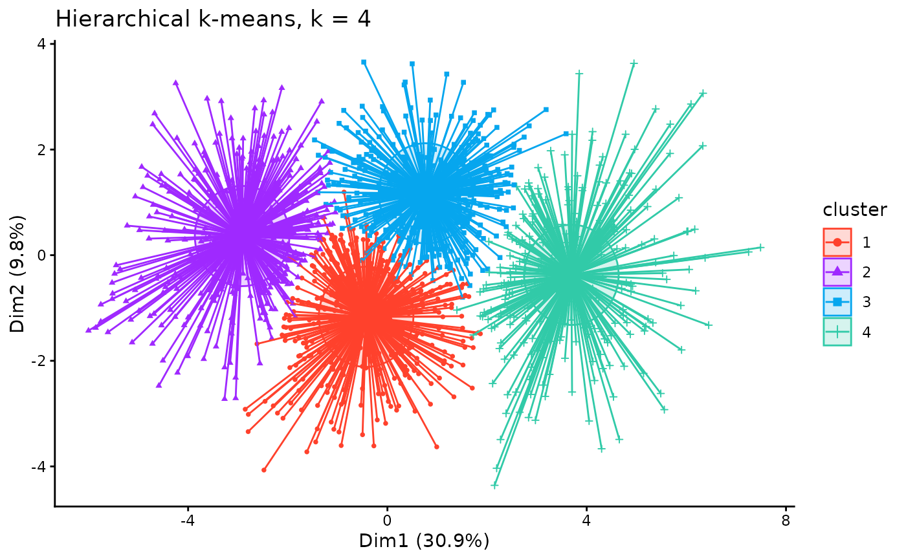

Runs a cluster analysis with one of several algorithms and returns the
solution in a standardized format, together with visualizations. This is a
wrapper around the family functions seg_cluster_hkmeans(),
seg_cluster_partitioning(), seg_cluster_hierarchical(),
seg_cluster_fuzzy(), seg_cluster_model() and seg_cluster_density(),
which can also be used directly.
Arguments
- x
The output of
seg_prep_data()(recommended), or a data frame or numeric matrix with already prepared clustering variables (no missing values).- method
Clustering method:
"hkmeans"(default),"kmeans","pam","agnes","diana","fuzzy","mclust","dbscan"or"hdbscan". See "Details".- k
Number of clusters. A vector (e.g.
2:6) returns one solution per number of clusters. Ignored by the density-based methods. For"mclust",NULLlets the BIC choose the number of clusters (slow).- ...
Further arguments passed to the family function of the method, e.g.
nstartfor k-means,linkagefor AGNES,memb_expfor fuzzy clustering orepsfor DBSCAN.- plots
Logical. Whether to create the plots. Defaults to
TRUE.- cluster_plot_args
A list of arguments passed to
factoextra::fviz_cluster(), overriding the defaults (seeseg_plot_cluster()), e.g.list(ellipse.type = "convex").- dend_args
A list of arguments passed to
factoextra::fviz_dend(), overriding the defaults (seeseg_plot_dend()), e.g.list(type = "phylogenic").- centers_args
A list of arguments passed to
seg_plot_centers(), overriding the defaults, e.g.list(type = "bars", scale = "original").- heatmap_n
Number of respondents randomly sampled for the heatmap. Defaults to 200.
- seed
Random seed. The global random seed is left untouched. Defaults to 123.
- verbose
Logical. Whether to print the results. Defaults to
TRUE.
Value
For a single number of clusters, an object of class seg_cluster,
a list with the elements:
method,family: the clustering method and its family.k: the requested number of clusters (NAfor density-based methods).k_found: the number of clusters found (excluding noise).cluster: integer vector with the cluster of each respondent (0 = noise), in the order of the prepared data.membership: matrix with the membership degrees (fuzzy) or probabilities (model-based) of each respondent in each cluster,NULLfor the other methods.sizes: tibble with the size and share of each cluster.centers: tibble with the mean of each clustering variable per cluster.assignment: tibble with the respondent identifier, the cluster and method-specific information (e.g. the highest membership degree).data,data_full,dist: the prepared clustering variables, the original data of the retained respondents and the distance matrix (if available), as passed on fromseg_prep_data().fit: the result of the underlying clustering function.tree: the hierarchical tree (classhclust) for hierarchical methods and hierarchical k-means, otherwiseNULL.cluster_map: named integer vector mapping the cluster codes offit(names) to the renumbered codes,NULLif not renumbered.prep: the preparation settings ofseg_prep_data()(variables, missing values, rescaling parameters), used to prepare new respondents inpredict.seg_cluster().plots: list of plots (see "Visualizations").settings: list of the settings used.
For several numbers of clusters, an object of class seg_cluster_set, a
list with the elements solutions (named list of seg_cluster objects,
e.g. solutions$k4), summary (tibble with the cluster sizes per
solution), plot (the cluster plots of all solutions combined) and
method.
Details
Comparison of the methods
| Method | Family | k needed | Membership | Cluster shape | Noise / outliers | Speed |
"hkmeans" | partitioning (hybrid) | yes | hard | spherical, similar size | sensitive | fast |
"kmeans" | partitioning | yes | hard | spherical, similar size | sensitive | fast |
"pam" | partitioning | yes | hard | spherical | robust | medium (n < ~5,000) |
"agnes" | hierarchical (bottom-up) | yes (cut) | hard | depends on linkage | depends on linkage | medium (n < ~10,000) |
"diana" | hierarchical (top-down) | yes (cut) | hard | any | sensitive | slow |
"fuzzy" | fuzzy partitioning | yes | soft (degrees) | spherical | sensitive | medium |
"mclust" | model-based | optional (BIC) | soft (probabilities) | ellipsoidal, flexible | partly | slow |
"dbscan" | density-based | no (eps, min_pts) | hard + noise | arbitrary | identifies noise | fast |
"hdbscan" | density-based | no (min_pts) | hard + noise | arbitrary, varying density | identifies noise | fast |
Which method to use?
Hierarchical k-means (
"hkmeans", default) combines the strengths of hierarchical clustering (a good, deterministic starting solution) and k-means (optimization of the cluster assignment). It is a robust default for typical survey segmentations based on rating scales.k-means is the classical method; with many random starts (
nstart) it gives results similar to hierarchical k-means.PAM (k-medoids) is more robust to outliers and extreme answer patterns and works with any distance measure (e.g. Manhattan or Gower). The cluster centers are real respondents (medoids).
Hierarchical clustering (AGNES, DIANA) shows how the clusters merge or split (dendrogram), which helps to understand the structure and to compare different numbers of clusters. The solution is not optimized afterwards and respondents cannot change cluster once merged.
Fuzzy clustering gives each respondent a membership degree for every cluster, which shows how clearly respondents belong to a segment.
Model-based clustering fits a mixture of multivariate normal distributions, gives membership probabilities and can choose the number of clusters and the cluster shapes via BIC. It is statistically principled but slow and can produce very unequal cluster sizes.
Density-based clustering (DBSCAN, HDBSCAN) finds dense regions of arbitrary shape and labels respondents outside of them as noise. Survey data with many correlated rating scales rarely contains such regions; these methods then find a single cluster (or only noise) and are mainly useful to detect outliers.
A good approach is to start with hierarchical k-means, compare the solution
with PAM and/or model-based clustering, and validate the candidate
solutions (see also seg_optimal_clusters() and
seg_compare_algorithms()).
Output
All methods return an object with the same structure (see "Value"). The clusters are renumbered by size (1 = largest cluster) so that solutions are comparable across methods and numbers of clusters. Noise (density-based methods) is coded as cluster 0.
Visualizations
plots$cluster: the respondents in the space of the first two principal components (factoextra::fviz_cluster()); seeseg_plot_cluster(). With many clustering variables, the first two components explain only part of the variance (shown in the axis labels), so clusters may overlap in the plot even if they are separated in the full space.plots$dend: the dendrogram of hierarchical methods and hierarchical k-means (factoextra::fviz_dend()); seeseg_plot_dend().plots$heatmap: a heatmap of a random sample of respondents, sorted by cluster; seeseg_plot_heatmap().plots$centers: the profiles of the clusters, i.e. the mean of each clustering variable per cluster (centers), by default as profile lines; seeseg_plot_centers().plots$bic: the BIC of the model-based clustering models (factoextra::fviz_mclust()).
See also
Other clustering:
predict.seg_cluster(),
seg_agreement(),
seg_as_cluster(),
seg_cluster_density(),
seg_cluster_fuzzy(),
seg_cluster_hierarchical(),
seg_cluster_hkmeans(),
seg_cluster_model(),
seg_cluster_partitioning(),
seg_dbscan_eps(),
seg_plot_centers(),
seg_plot_cluster(),
seg_plot_dend(),
seg_plot_heatmap()
Examples
# \donttest{
prep <- seg_prep_data(
sm_synthetic,
vars = dplyr::starts_with("F50_0_"),
id = "id",
missing = "mice",
max_missing_prop = 0.2,
verbose = FALSE
)
# Hierarchical k-means with 4 clusters
cl <- seg_cluster(prep, k = 4)
#>
#> ── Cluster solution: Hierarchical k-means, k = 4 ──
#>
#> • Cluster 1: n = 387 (28%)
#> • Cluster 2: n = 368 (27%)
#> • Cluster 3: n = 355 (26%)
#> • Cluster 4: n = 261 (19%)
#> Plots: `$plots$cluster`, `$plots$dend`, `$plots$heatmap`, and `$plots$centers`
cl$sizes
#> # A tibble: 4 × 3
#> cluster n share
#> <int> <int> <dbl>
#> 1 1 387 0.282
#> 2 2 368 0.268
#> 3 3 355 0.259
#> 4 4 261 0.190
cl$plots$cluster

# PAM for 2 to 5 clusters
cl_pam <- seg_cluster(prep, method = "pam", k = 2:5)
#>
#> ── Cluster solutions: pam ──
#>
#> • k = 2: 861 / 510 (smallest: 37%)
#> • k = 3: 600 / 509 / 262 (smallest: 19%)
#> • k = 4: 414 / 369 / 355 / 233 (smallest: 17%)
#> • k = 5: 315 / 306 / 292 / 233 / 225 (smallest: 16%)
#> Solutions: `$solutions$k2`, `$solutions$k3`, `$solutions$k4`, and
#> `$solutions$k5`
cl_pam$summary
#> # A tibble: 4 × 5
#> k k_found sizes smallest_share noise
#> <int> <int> <chr> <dbl> <int>
#> 1 2 2 861 / 510 0.372 0
#> 2 3 3 600 / 509 / 262 0.191 0
#> 3 4 4 414 / 369 / 355 / 233 0.170 0
#> 4 5 5 315 / 306 / 292 / 233 / 225 0.164 0
# AGNES with a phylogenic tree
cl_agnes <- seg_cluster(
prep,
method = "agnes",
k = 4,
dend_args = list(type = "phylogenic")
)
#> Error in purrr::map(k_values, function(kk) { res <- seg_with_seed(seed, fit_fun(kk)) obj <- seg_new_cluster(input, method = method, family = family, k = kk, res = res, settings = c(settings, res$settings, list(seed = seed)), relabel = relabel, cluster_labels = cluster_labels) if (isTRUE(plot_opts$plots)) { obj$plots <- seg_cluster_plots(obj, plot_opts, seed) } obj}): ℹ In index: 1.
#> Caused by error in `.phylogenic_tree()`:
#> ! The igraph package is required for a phylogenetic-style tree. Install it with install.packages('igraph').
# }